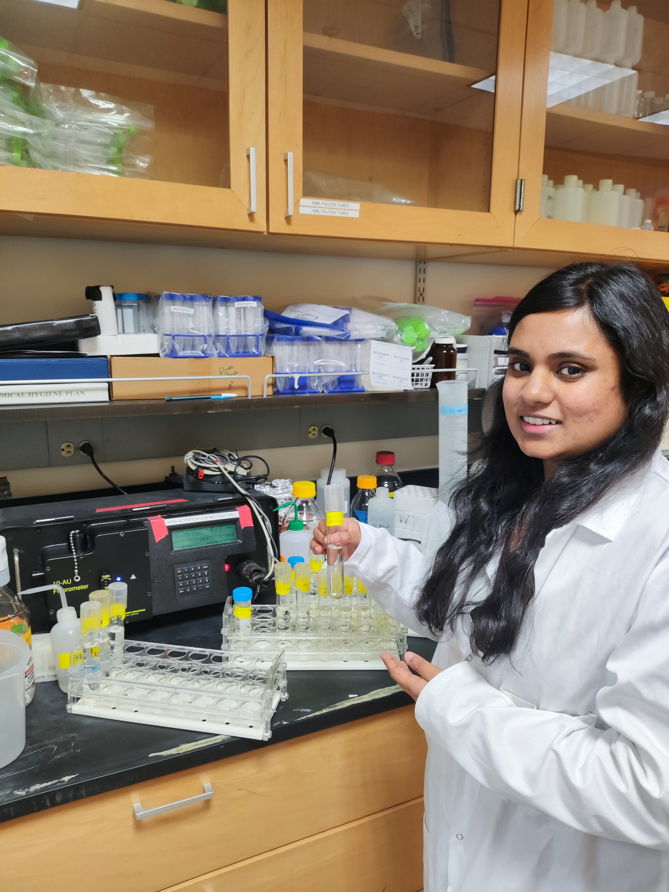

About Me

I am Fiona Reza, an oceanography researcher interested in how environmental change shapes microbial life in aquatic ecosystems. My work spans harmful algal blooms, phytoplankton ecology, and coastal water quality. I hold master’s degrees in Oceanography from Old Dominion University and the University of Dhaka, where I also earned my bachelor’s degree.
At Old Dominion University, I investigated how temperature and salinity influence the growth of the harmful dinoflagellate Alexandrium monilatum. I combined culture experiments, microscopy, FlowCam imaging, and MATLAB growth models, alongside studies of seasonal phytoplankton communities in Virginia’s Lafayette River. This work deepened my interest in how environmental conditions influence microbial interactions and bloom dynamics.
My research began with plankton diversity around Bangladesh’s Kutubdia Island. Later, as a project intern at the Bangladesh Council of Scientific and Industrial Research (BCSIR), I extracted and characterized sodium alginate from brown seaweeds to assess its industrial potential. I received the Best Oral Presenter award in the Blue Economy technical session at ICEPSD 2022 for this research.
My work as a teaching assistant at Old Dominion University, teaching undergraduate oceanography labs and guiding field sampling, has strengthened my commitment to making science accessible through hands-on learning. Looking ahead, I want to bring experiments and ecosystem modelling together to understand how environmental change affects microbial communities and aquatic food webs.